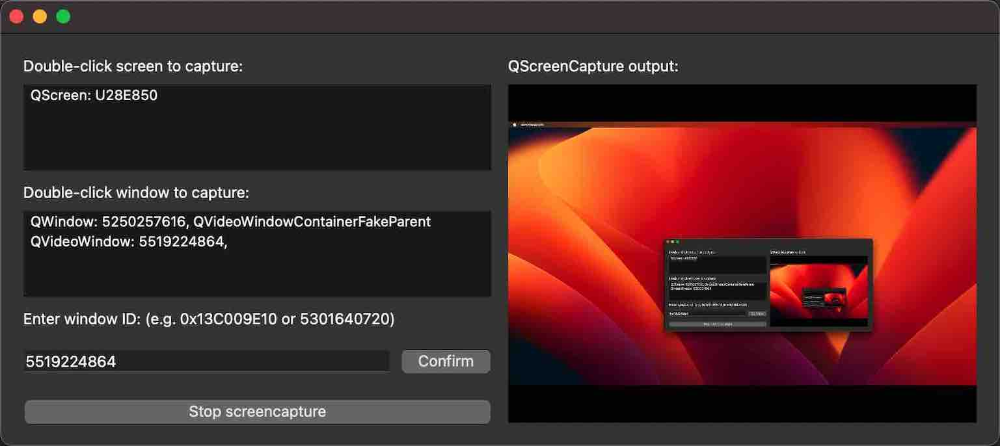

Screen Capture Example
Capturing a screen or window.
Screen Capture demonstrates how to capture a screen or window using QScreenCapture and QWindowCapture. The example shows a list of screens and windows and displays a live preview of the selected item using a QMediaCaptureSession and a QVideoWidget. Capturing can be started and stopped with a button.

Running the Example
To run the example from Qt Creator, open the Welcome mode and select the example from Examples. For more information, visit Building and Running an Example.
Application Structure
The example consists of three custom classes. The UI and all screen capture functionality is implemented in the class ScreenCapturePreview. The classes ScreenListModel and WindowListModel only serve as models behind the two QListView widgets. The main function creates a ScreenCapturePreview object, which in turn creates instances of QScreenCapture and QWindowCapture, and a QMediaCaptureSession and QVideoWidget, in addition to all the UI widgets.
The screen and window models are populated with the return values of QGuiApplication::screens() and QWindowCapture::capturableWindows(), respectively.
When a list item is selected, it is connected to the QScreenCapture object with setScreen(), or to the QWindowCapture object with setWindow(). The capture object is connected to the QMediaCaptureSession object with setScreenCapture() and setWindowCapture(), respectively. The capture session in turn is connected to the QVideoWidget object with setVideoOutput(). Thus, the capture output is previewed in the video widget on the right hand side of the UI.
The start/stop button calls QScreenCapture::start() and QScreenCapture::stop(), or QWindowCapture::start() and QWindowCapture::stop().
A QMessageBox pops up if the errorOccurred signal is emitted.